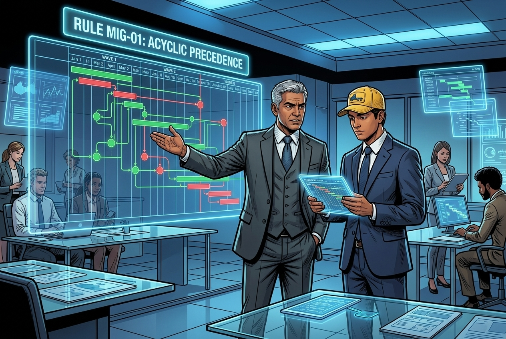
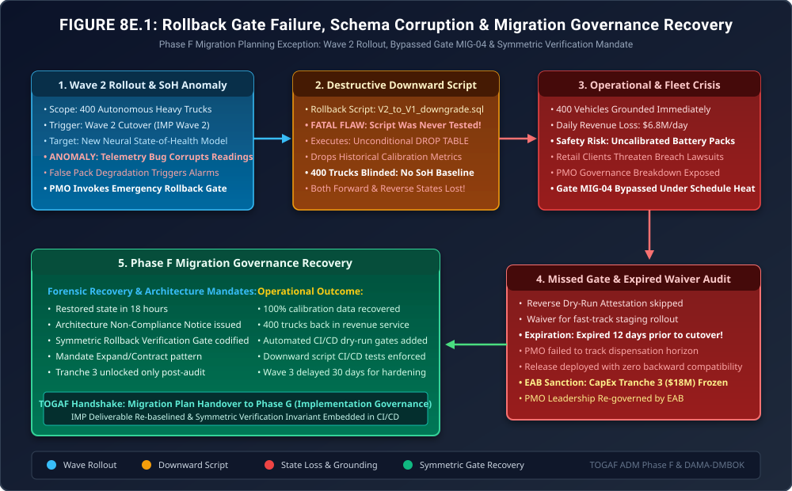

When the Rollback Script Destroys the Database
Phase F Exception Governance: Wave 2 Telemetry Bugs, Destructive Downward Migrations, Grounded Autonomous Fleets & The Symmetric Verification Gate

"Every enterprise architect includes a pretty box labeled 'Rollback Strategy' in their migration blueprint. It gives the steering committee a warm sense of security. But how many architects have actually tested the reverse script under full production load?"
"In Chapter 8, the PMO planned a disciplined 3-wave migration with staged CapEx releases. But when an algorithmic anomaly struck Wave 2, the team panicked, pulled the rollback lever, and discovered that their untested downward script was far more destructive than the bug they were trying to escape. Here is what happens when migration governance forgets that rollback is an architectural deliverable, not a theoretical wish."
The Production Reality: When Downward Migrations Drop Production Tables


V2_to_V1_downgrade.sql, inadvertently triggering destructive DROP TABLE cascades across historical vehicle calibration data.Who wrote this downgrade script?! The junior data engineer assumed the schema change was purely additive, so the rollback script includes:
DROP TABLE battery_cell_calibration_metrics CASCADE;! It just purged eighteen months of historical impedance baselines, digital twin calibration curves, and cell wear profiles for all 400 trucks! The fleet cannot revert to Wave 1 because Wave 1 requires those calibration tables to initialize vehicle boot sequences! Both versions are dead!"

Rohan, how did this downgrade script make it to production without passing Gate MIG-04 (Bi-Directional Migration & Staging Dry-Run Verification)?"

Here are the binding EAB rulings: First, we invoke Point-in-Time Database Recovery (PITR) using our immutable Write-Ahead Logs to restore calibration data up to 03:14:59 UTC. Second, under my authority as EAB Chairman, I am freezing CapEx Tranche 3 ($18,000,000). Not a single dollar of capital will be released to the PMO until we verify complete operational recovery. Third, we codify Rule MIG-05 (Symmetric Rollback Verification Gate): henceforth, no migration script may execute in production unless its exact downward rollback script has achieved 100% data fidelity verification in a cloned staging environment within 48 hours of cutover. And fourth: destructive DDL is permanently banned. All future schema evolutions must follow the Expand/Contract Pattern!"
1. The Architecture Root Cause: Destructive DDL vs. The Expand/Contract Pattern
In Phase F Migration Planning, managing technical debt and state transition risks requires strict database schema governance. In Chapter 8, the team celebrated the speed of Wave 2 without evaluating schema backward compatibility.
When migrating relational and time-series schemas across distributed autonomous fleets, schema changes fall into two distinct mathematical categories:
| Migration Pattern | Forward Action (V1 → V2) | Rollback Action (V2 → V1) | State Entropy & Risk |
|---|---|---|---|
| Destructive DDL (Flawed Script) | Replaces calibration table with new neural feature vectors via ALTER TABLE DROP / ADD. |
Executes DROP TABLE ... CASCADE to recreate V1 schema. |
Catastrophic (Total Data Loss): Irreversible loss of historical vehicle state. Zero backward compatibility. |
| Expand / Contract Pattern (Rule MIG-05) | Adds new columns alongside legacy tables. Both V1 and V2 models write dual telemetry through an abstraction view. | Reverts application pointers to legacy columns; no tables are dropped. Old data remains 100% intact. | Zero Entropy (Reversible): Rollback time \(\le 30\text{ seconds}\) with zero data loss (\(\text{RPO} = 0\)). |
The formal mathematical definition of Symmetric Migration Invariance under Rule MIG-05 requires that the composite state transformation operator \(\mathcal{T}_{\text{rollback}} \circ \mathcal{T}_{\text{forward}}\) preserves historical state space \(\mathcal{S}_{\text{historical}}\):
\[ \forall s \in \mathcal{S}_{\text{historical}}, \quad \left(\mathcal{T}_{\text{rollback}} \circ \mathcal{T}_{\text{forward}}\right)(s) \equiv s \]Because the untested downward script executed destructive drops, the operator violated the invariant: \(\left(\mathcal{T}_{\text{rollback}} \circ \mathcal{T}_{\text{forward}}\right)(s) = \emptyset\), resulting in complete state erasure.
2. Architecture Diagram: Rollback Gate Breakdown & State Recovery
Figure 8E.1 maps the complete failure and recovery lifecycle: illustrating the Wave 2 deployment, the execution of the flawed downward script, the subsequent fleet grounding, the audit of expired Dispensation DSP-MIG-03, and the EAB-mandated Write-Ahead Log (WAL) forensic state restoration.

3. Mathematical Modeling: Recovery Objectives & CapEx Release Gating
In migration architecture, the Recovery Point Objective (RPO) and Recovery Time Objective (RTO) are mathematical bounds governing rollback acceptability. The financial impact of the grounding \(C_{\text{incident}}\) was modeled as:
\[ C_{\text{incident}} = \int_0^{T_{\text{restore}}} \left( N_{\text{trucks}} \cdot \dot{R}_{\text{truck}} + \dot{L}_{\text{spoilage}}(t) \right) dt + P_{\text{contract\_default}} \]Where:
- \(N_{\text{trucks}} = 400\) grounded heavy vehicles.
- \(\dot{R}_{\text{truck}} = \$680/\text{hour}\) in lost freight throughput per vehicle.
- \(T_{\text{restore}} = 18.2\text{ hours}\) required to parse and replay 2.4 terabytes of Write-Ahead Logs (WAL) across the distributed cluster.
- \(P_{\text{contract\_default}} = \$1,850,000\) in liquidated damages for missed delivery windows.
The total incident cost reached:
\[ C_{\text{incident}} = (400 \times \$680 \times 18.2) + \$1,850,000 = \$4,950,400 + \$1,850,000 = \mathbf{\$6,800,400} \]⚠️ CapEx Release Gating Formula under Rule MIG-05
To safeguard enterprise capital, the EAB codified the CapEx Tranche Release Gate as a strict boolean predicate:
\[ \text{Gate}_{\text{Tranche\_3}} = \mathbb{I}\left( \text{PITR}_{\text{verified}} \land \left( \Delta t_{\text{rollback\_test}} \le 48\text{h} \right) \land \left( \text{Loss}_{\text{data}} \equiv 0 \right) \land \left( \text{DSP}_{\text{expired}} \equiv \emptyset \right) \right) \]Unless all four conditions evaluate to TRUE (\(1\)), the $18,000,000 capital tranche remains locked in escrow.
4. Formal Architecture Governance Artifacts (TOGAF® Deliverables)
The EAB ratified three formal governance deliverables to close the migration planning gap and re-baseline the enterprise transformation roadmap:
Migration Planning Non-Compliance Notice
| Target Program: | Joint Enterprise PMO (Wave 2 Deployment Lead) |
| Violated Standard: | Gate MIG-04 (Rollback Verification) & Rule GOV-02 (Dispensation Expiration) |
| Incident Description: | Execution of untested downward database script in production under expired Dispensation DSP-MIG-03, causing unrecoverable schema destruction across 400 vehicles. |
| Sanction Imposed: | Immediate suspension of Wave 2 rollout; freeze of CapEx Tranche 3 ($18M release); mandatory PMO architectural re-certification. |
Rule MIG-05: Symmetric Rollback & Expand/Contract Invariant
Every future work package in the Implementation and Migration Plan must satisfy the following three binding constraints:
- Automated Staging Rollback CI/CD Gate: Prior to production cutover, the CI/CD deployment pipeline must deploy the forward migration to a cloned staging database containing production-scale data, execute automated validation tests, immediately execute the inverse rollback script, and verify that the resulting database checksum matches the pre-migration baseline 100%.
- Prohibition of Destructive DDL:
DROP TABLE,DROP COLUMN, and destructive type coercions are permanently prohibited in forward migration scripts. All schema changes must use the Expand/Contract Pattern, deprecating legacy structures across a minimum of two full migration waves. - Automated Pre-Flight Dispensation Sweep: The release deployment engine must query the Architecture Dispensation Register; if any associated waiver has expired or will expire within 14 calendar days, the pipeline automatically aborts the release.
5. The Strategic Morals: Where Real Handbooks Earn Their Keep
🏛️ Three Fiduciary Takeaways for Migration Planning
- Rollback Is a First-Class Citizen: If you haven't tested the downward path, you haven't engineered a migration; you have executed a gamble. Real handbooks mandate that the reverse path is tested with the exact same rigor as the forward path.
- Never Trust Delivery Schedule Pressure: When milestones slip, the first thing engineering teams cut is rollback verification. Staged CapEx gating (freezing tranche releases) is the Chief Architect's strongest tool to maintain governance discipline.
- Expand/Contract Is the Only Safe Way: In high-throughput industrial and autonomous systems, state is precious. Destructive migrations are an unforgivable architectural sin.
Fact-Check & Statutory References
- The Open Group (2022). The TOGAF® Standard, 10th Edition: Phase F (Migration Planning). Implementation and Migration Plan (IMP), Transition Architecture sequencing, and CapEx release gates.
- DAMA International (2017). DAMA-DMBOK: Data Management Body of Knowledge (2nd Edition). Database operations, schema evolution patterns, and disaster recovery point objectives (RPO).
- Fowler, M. & Sadalage, P. (2006). Refactoring Databases: Evolutionary Database Design. Addison-Wesley. The Transition Phase / Expand and Contract Pattern.
- Consortium PMO Governance Committee (2025). Incident Investigation Report: PMO-INC-802 (Wave 2 Database Schema Corruption & CapEx Gating Enforcement). Joint PMO Technical Report.